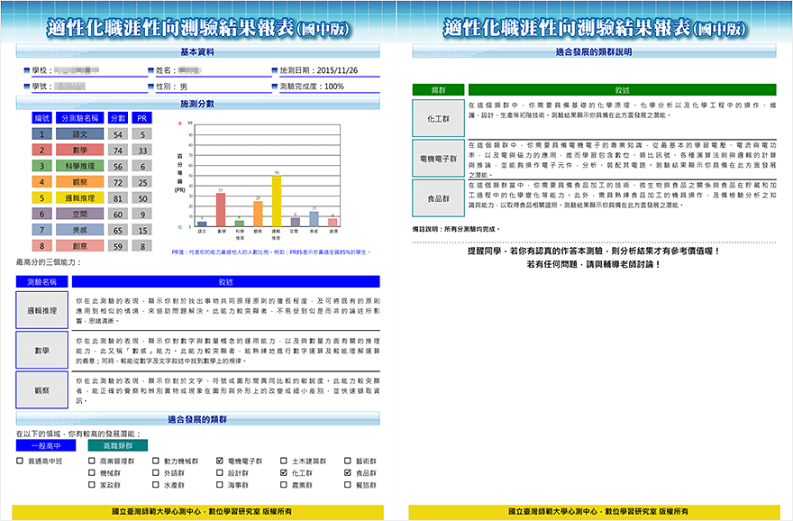
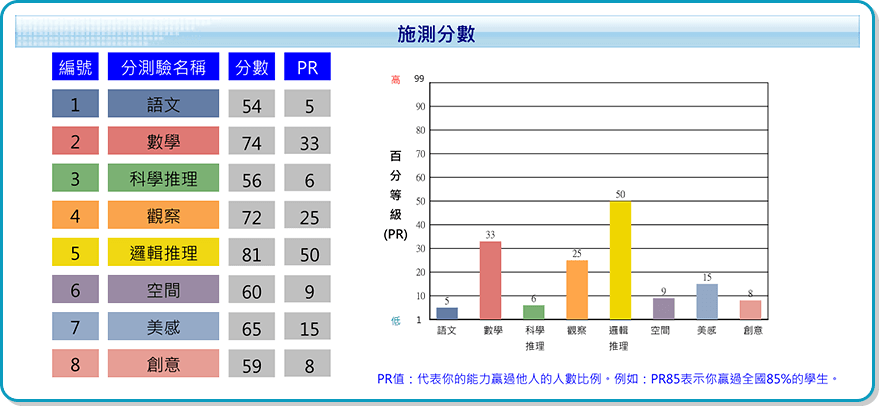
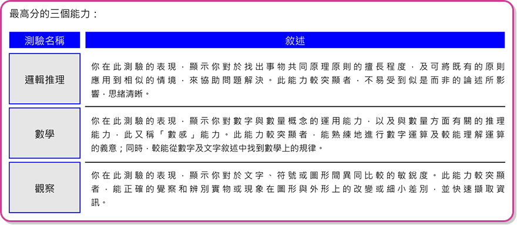
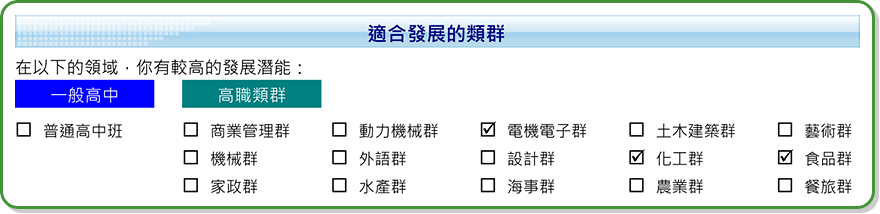
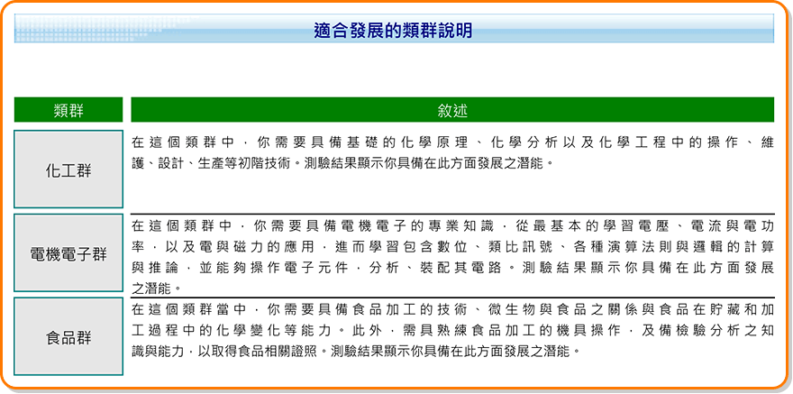

-
- 報表須知
-
- 報表申請
1. 若您所安排之施測班級已完成測驗，請至[學生報表]>[報表申請與下載]頁面進行申請。
2. 學生報表於正式施測日之當學期內，必須提出申請，逾期則無法受理。
例如：若於上學期施測，則最後申請日為1月31日；若於下學期施測，則最後申請日為7月31日。
3. 申請成功之學生報表，自申請日之後的三個月內（含製表所需之一週作業時間），皆可自行於系統中下載使
用，逾期則系統將會自動刪除報表檔案。
例如：民國100年7月31日當天提出申請，同年10月31日之前可於系統中下載學生報表檔案。
- 報表申請
-
- 報表資訊說明
本測驗根據試題反應理論(IRT)所獲得之能力，轉換出語文、數學、空間、邏輯推理、觀察、美感、科學推理與創意測驗等八種量尺分數， 以及全國性常模資料(詳細常模資料請參考指導手冊)。而長條圖以全國性常模資料呈現，並提供優勢能力的說明，將助於受試者瞭解其潛能， 此為生涯輔導或生涯決策的重要參考資訊。此外，有別於過去測驗結果的呈現，透過本測驗的相關算則與研究，提供類群與高中適合度之建議， 並提供適合發展類群的說明，以利於輔導教師在進行測驗解釋時能有更多的訊息。下圖為本測驗結果報表及說明，請參閱。
- 報表資訊說明
-
- 測驗分數
根據試題反應理論(IRT)所獲得之能力，轉換為平均數80、標準差14、總分125的量尺分數。
- 測驗分數
-
- 優勢能力
根據PR值挑選出受試者最高的三項能力，並且提供能力說明。
- 優勢能力
-
- 高中職群科建議
根據測驗分數，透過系統算則，進行高中或高職各類群的適合度計算。從挑選出高職類群中3個適合度最高的群科和建議是否朝向高中發展。
- 高中職群科建議
-
- 建議說明
根據適合發展的類群所勾選的內容，提供說明。
- 建議說明